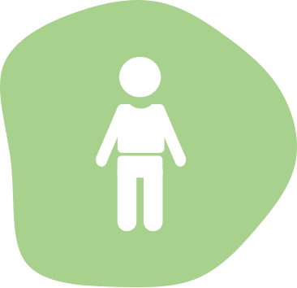

Was bietet dir KOPF BIS FUSS?
Du bekommst schnell Termine bei Ärzten und Spezialisten Deines
Vertrauens, die sich Zeit für Dich nehmen und Du musst Dir keine
Gedanken über die Kosten machen.
Ein Wahlarztbesuch und damit verbundene diagnostische Befunde wie
Blutlabor
oder Radiologie kosten schnell mehrere hunderte Euro. Der Kopf Bis Fuss Baustein
übernimmt diese Kosten zu 80 oder sogar 100%. Darüber hinaus werden viele
weitere Kosten übernommen wie Brillen und Kontaktlinsen, Rezeptgebühren
und vieles mehr.

ALLTAG
- Brillen & Kontaktlinsen
- Rezeptgebühren
- Impfungen
- Medikamente der Schulmedizin & Alternativmedizin
- Orthopädische (Sport) Bandagen
- Traditionelle chinesische Medizin (TCM)
DIAGNOSTIK
- Röntgen
- Magnetresonanztomographie (MRT)
- Computertomografie (CT)
- Labor
- Ultraschall
- Mammographie
- Knochendichtemessung
PHYSIKALISCHE BEHANDLUNGEN
- Physiotherapie
- Chiropraktik
- Osteopathie
- Ergotherapie
- Craniosacraltherapie
PRIVATARZT
- Allgemeine Mediziner/innen
- Fachärzte/innen (kein Besuchslimit pro Quartal)